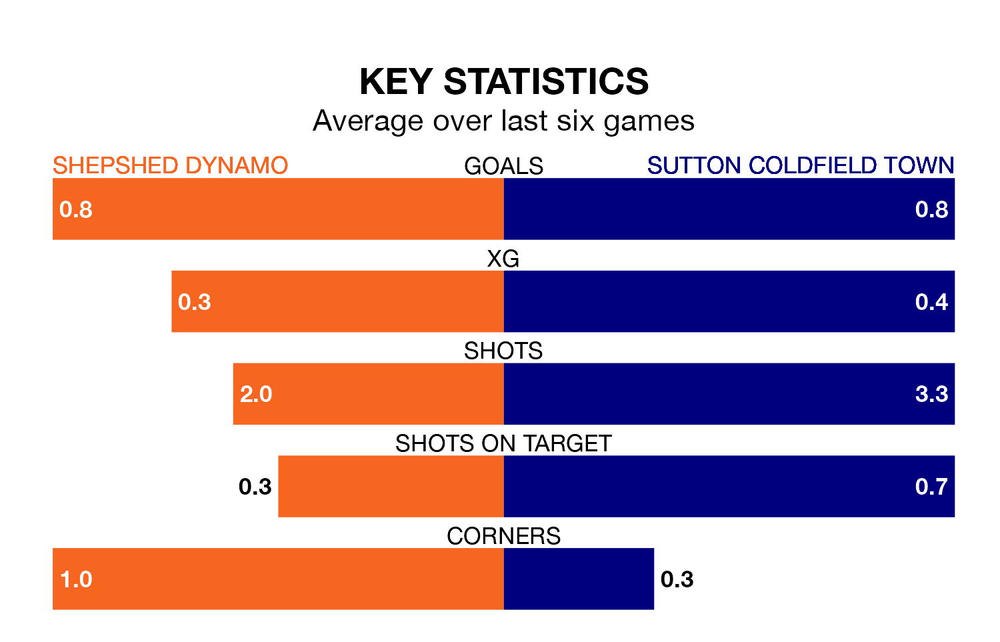

Shepshed Dynamo face Sutton Coldfield Town at the Dovecote on Saturday looking to secure a first win in seven Northern Premier League Division One – Midlands games.
Shepshed Dynamo have lost three and drawn three matches since they last earned three points – against Bedworth United on December 23.
They face a Sutton Coldfield side who have won one and drawn two over that time.
With 26 goals in 25 games so far this season, Shepshed Dynamo are the league's third-lowest scorers with 1.0 goals per game. And they are conceding more than average, letting in 44 goals at a rate of 1.8 per game.
Sutton Coldfield, meanwhile, are average scorers, with 1.5 goals per game. They have conceded 1.4 goals per game.
The home side are 15th in the table after 25 games, of which they have won seven and drawn five, earning 26 points.
Town are five places ahead of Shepshed Dynamo in 10th, with 10 wins and six draws putting them on 36 points.
In the last five years, Shepshed Dynamo and Sutton Coldfield have played each other on five occasions. Shepshed Dynamo won three of them, Sutton Coldfield one, and they drew once.
On average, Shepshed Dynamo scored 2.0 goals and Sutton Coldfield 1.4 in those matches.
Their last meeting was on August 26, when Shepshed Dynamo won 1-0 away.
Shepshed Dynamo's last match was on February 3, a 1-1 draw against Boldmere St. Michaels.
Sutton Coldfield lost 1-0 against Lye Town last time out, also on February 3.
Updated: 11:43 (UTC), 08/02/24